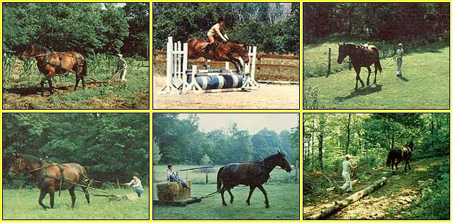

It requires a little patience, but-as Teresa Cleeremans discovered-you can . . .
A good horse is a real asset to any farmstead. Riding through the woods can provide countless hours of "home entertainment", and-when the creeks are up or the vehicles broken down (which seems to be the case more often than not)-a pleasure steed becomes invaluable as transportation . . . to visit friends, pick up supplies, or keep appointments.
However, a whole new realm opens up when you train a "riding" horse to harness and put the animal to work around the farm. I use my mare Gypsy to pull logs from the woods, haul rocks on a stoneboat (sled), and even cultivate my gardens.
It seems to make good sense-especially considering the amounts of costly grain and hay a horse consumes-to let the critter "pay its way". Furthermore, this transition from saddle horse to workhorse can be an easy one . . . if you keep a few basic equine principles in mind. For one thing, a horse has a relatively short attention span .. . so training is best done in gradual steps. You must also be aware of your beast's limits, because-if pushed too hard-it'll become frustrated and rebel. In addition, be careful-in your enthusiasm-not to excite the trainee in any way when introducing new tasks . .. because a workhorse must be a mellow, slow-moving animal.
Reward and punishment go hand in hand. Praise, pats, and bits of carrot are a horse trainer's most helpful tools. You can assure and calm your steed instantly with a word or touch . . . and praise (or a tasty reward) will stimulate of Dobbin's interest and response.
Some critters will test their limits every so often, though, so punishment may occasionally be unavoidable. When such chastisement does become necessary, it's very important to know when to apply it and when to stop . . . timing, therefore, is essential. For example, a pull on the reins is a form of punishment . . . and the release of that pull is a reward. So if you tell your horse "whoa", and it doesn't respond ... you must continue pulling on the reins and repeating "whoa" until the horse slows to a stop. When the order is obeyed, release the pressure at once. After a while, the oral command will be all that's needed.
Most of the time, a harsh word will be sufficient to reprove your helper, but every now and again you can expect to become involved in a battle of wills. After all, you're dealing with an animal that may have 10 times your body mass . . . and this huge critter has to learn to respect you. I've used a long switch on Gypsy a few times, but a slap with the reins is usually all the encouragement she needs to move a head. As soon as my wayward worker responds, of course, she receives immediate praise.
To begin training my horse to accept a harness, I ran a set of long reins through her stirrups and guided her-from behind-through areas she was already familiar with ... introducing the words "gee" (right), "haw" (left), and "get up" in the process. (Gypsy already knew "whoa" and "back".) Your horse will want to keep an eye on you, so-while standing behind the animal-you can extend an arm to the right or left to help reinforce the spoken directions.
Once Gypsy was fairly adept at following word commands, she was ready for the harness. It's wise to let any horse take a good look at (and smell of) this apparatus before you put it on. Make the necessary adjustments and be very wary when you fasten the crupper (the strap under the tail) . . . if your harness has one. After that's done, let the animal have a moment to get used to the feel and sound of alt those straps and chains.
When the horse seems unconcerned . . . walk it in a familiar area-while you guide from behind and practice commands and backing. (This first harnessed stroll should be all that's attempted in a one-day lesson.)
After your beast will walk in harness calmly and willingly, the animal is ready to learn to pull. I introduced my mare to the task with logs. Some folks say it's best to fasten your "novice" to something that won't move too easily .. . like a sled full of stones. Perhaps such weighty "insurance" is necessary for unmanageable runaways, but a properly prepared horse is unlikely to bolt. You see, your worker must learn to ease into the pull if the animal is to use its weight and power to advantage ... and a calm and confident horse will soon do this smoothly and consistently.
One cold winter day in Michigan, I used Gypsy to haul some big logs up from the river bottom. The snow was fairly deep-and the uphill pull made for some pretty rough going-so she paused momentarily . . . lost her momentum . .. and the large log packed into the snow.
When Gyp tried to continue, the timber wouldn't budge. I, of course, encouraged her to pull again ... upon which she reared and plunged. Still, the log didn't move. I unhitched the horse, and she got really nervous and started to run around and around . . . too frenzied to cope.
In the meantime, a friend cut the tree trunk in half . . . and I backed the old girl (again in her harness) up to the log one more time. That was the final straw! She plunged ahead and galloped up the hill . . . dragging both the length of timber and me!
That experience taught me not to get between the horse and whatever it's pulling . . . and never to overburden my beast Gypsy, however, was much more upset than I was . . . it took months for her to regain her calm while being hooked up, and I had to teach her to ease into the pull all over again.
Since those early lessons, Gypsy has learned to haul other implements, too: a riding disc, an A-harrow, and a stoneboat. (Next on the agenda are a small plow and a wagon.) It seems that the more she's used, the better she gets! But whenever I put something new behind her, I'm careful to work her for only a short while . . . and always to end the lesson on a good note.
Take, for example, the first time my mare pulled a stoneboat to help gather rocks from a field. She started out fine, but before long she became feisty ... plunging, trotting, and getting that "wild look" in her eyes.
After a good hearty battle, I finally got both horse and sled to our destination ... whereupon Gypsy was praised (between clenched teeth) and given the rest of the day off. I think she and I were equally exhausted!
The next day-when I put her to the task again she performed perfectly the entire time. Whenever the wild look appeared, I just halted until it subsided . . . and then continued as before.
Always keep in mind that a horse usually revolts because it doesn't have the confidence to do something it hasn't attempted before. However, if you can relate to the beast in such a manner that it understands and accomplishes a simple task-with much-deserved praise-it will soon become a willing, gentle giant. And, again, don't push your animal ... a good two hours of work is fine for the newly harnessed horse.
Gypsy-whom we now usually refer to as "Ol'Gyps-Down-on-the-Farm" -was by no means a natural-born workhorse. She spent the first three years of her adult life in and out of the show ring . . . as an English pleasure horse and hunter. I believe her early career did much to teach her discipline under stress and contributed to her fine work as a draft animal.
It's been six years since my lady's show days, but she exhibits as much enthusiasm in the field as she did in the ring. I think the transition from riding horse to workhorse was a rewarding and welcomed change for her. In fact, both Gypsy and I couldn't be happier!
|
 CLOCKWISE FROM ABOVE: Your own horse may have first been trained to be a riding-or even a show-animal, but the valiant steed can also be readily taught to lend a helping hand on your homestead by hauling . . . heavy stones . . . good-sized logs . . . and loads of hay .... The first step, though, is to make sure the new ""farmhand"" gets used to the feel of being in harness while you walk behind and give commands .... With some proper training-and a bit of patience-you may very well wind up with a cooperative four-legged garden tiller! |
|
|